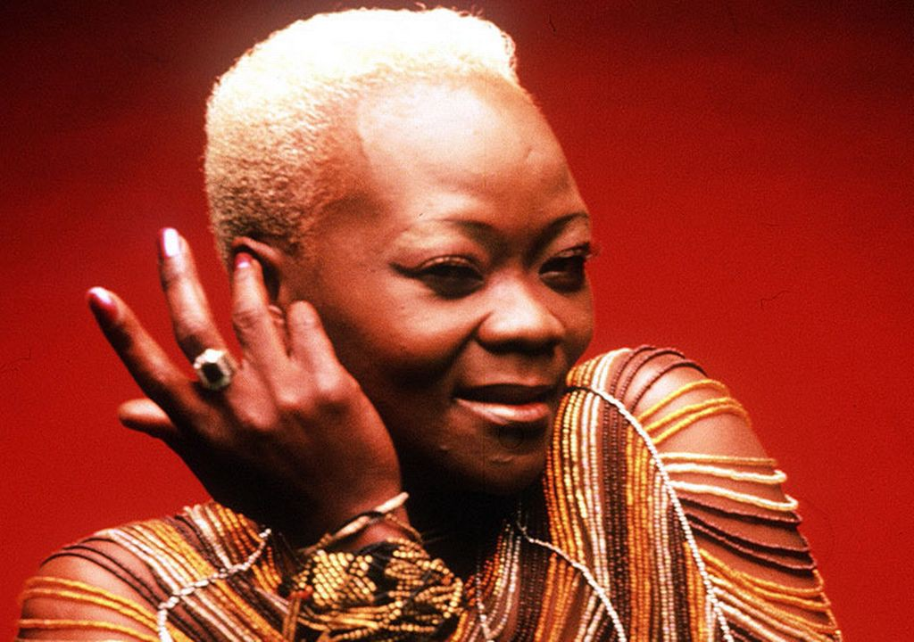

I wanna be loved. I just wanna be loved.
I wanna be loved. I just wanna be loved.
Brenda Nokuzola Fassie (3 November 1964 - 9 May 2004) was a South African anti-apartheid Afropop singer. Affectionately called MaBrrr by her fans, she was sometimes described as the "Queen of African Pop" or the "Madonna of The Townships" or simply as The Black Madonna. Her bold stage antics earned a reputation for "outrageousness".
Fassie was born in Langa, Cape Town, as the youngest of nine children. She was named after the American singer Brenda Lee. Her father died when she was two, and with the help of her mother, a pianist, she started earning money by singing for tourists.In 1981, at the age of 16, she left Cape Town for Soweto, Johannesburg, to seek her fortune as a singer. Fassie first joined the vocal group Joy (filling in for one of the members who was on maternity leave) and later became the lead singer for a township music group called Brenda and the Big Dudes. She had a son, Bongani, in 1985 by a fellow Big Dudes musician. She married Nhlanhla Mbambo in 1989 but divorced in 1991. Around this time she became addicted to cocaine and her career suffered
With very outspoken views and frequent visits to the poorer townships of Johannesburg, as well as songs about life in the townships, she enjoyed tremendous popularity. Known best for her songs "Weekend Special" and "Too Late for Mama", she was dubbed "The Madonna of the Townships" by Time magazine in 2001.
In 1995, she was discovered in a hotel with the body of her female lover, Poppie Sihlahla, who had died of an apparent overdose.[5] Fassie underwent rehabilitation and got her career back on track.[5] However, she still had drug problems and returned to drug rehabilitation clinics[5] about 30 times in her life. From 1996 she released several solo albums, including Now Is the Time, Memeza (1997), and Nomakanjani?. Most of her albums became multi-platinum sellers in South Africa; Memeza was the best-selling album in South Africa in 1998.
On the morning of 26 April 2004, Fassie collapsed at her home in Buccleuch, Gauteng, and was admitted into a hospital in Sunninghill. The press were told that she had suffered cardiac arrest, but later reported that she had slipped into a coma brought on by an asthma attack.[10] The post-mortem report revealed that she had taken an overdose of cocaine on the night of her collapse, and this was the cause of her coma. She stopped breathing and suffered brain damage from lack of oxygen. Fassie was visited in the hospital by Nelson Mandela, Winnie Mandela, and Thabo Mbeki, and her condition was front-page news in South African papers.She died aged 39 on 9 May 2004 in hospital without returning to consciousness after her life support machines were turned off. According to the South African Sunday Times and the managers of her music company, the post-mortem report also showed that she was HIV-positive. Her manager, Peter Snyman, denied this aspect of the report. Her family, including her long-term partner, were at her side when she died.
Souce: Wikipedia